How To Make Padded Applique' Wall Hangings
January/February 1978
by PAULA NEWCOMER
Quilted wall hangings make a colorful addition to any room...and they aren't as hard to make as you might think.
Maybe you'd like to make good use of those long winter nights that you're now spending curled up by the fire. And maybe you'd also like to recycle some of the many attractive scraps of material you've saved over the years. But - and here's the worst "maybe" of all-maybe the sheer logistics of making a quilt have intimidated you enough to keep you from giving it a try. Well, If that's your situation . . . perhaps you should try your hand on a padded applique wall hanging.
The machine-applique "wood stove" wall hanging shown in the accompanying photos is - I'm proud to say - an original design: I made it as a gift for a friend. ("Rebecca," I said, "here's your-own personal 'padded room'. Bounce off that for a while!") My friend was delighted. So was I, because the whole thing took less than a week to complete - working nights only - and the 'total cost for the project was under $6.00.
YOU DON'T HAVE TO BEAN ARTIST
The great thing about applique is that you don't have to be a Picasso to create stunningly beautiful designs. If there's a particular part of your homestead that you find especially attractive, you can make a simple sketch of it and translate some of that beauty into a highly original piece of folk art. You might want to capture some trees, against a sunset say, or a portion of the barn and field (with a farming implement or two thrown in, perhaps) ... or something funky in the way of an indoor scene, such as an old-timey bathtub (for the bathroom wall, naturally).
Then again, you don't have to copy real - life objects ... you can also create your own thematic designs. Bold, simple shapes are the most effective. The texture of the material you use (and the underlying padding) will eliminate the need for a great amount of detail ... although if you want to get fancy, you can add some interesting touches with bits of embroidery here and there.
THE "ROUNDED" LOOK
The wall hangings I make (see the accompanying photographs) have a kind of three-dimensional quality, a depth and richness that ordinary flat applique can't match. My secret: I pad each element of the picture as it is applied to the cotton fabric "front" . . . and I pad the entire piece again when I put the backing on. This way, it's possible to get a "rounded" look without having to stitch through five or six layers of tatting all at once.
WHAT YOU'LL NEED TO GET STARTED
If you do any sewing at all, chances you already have most of the necessary starting materials on hand. All I had to buy to make Rebecca's wall covering was [1] the solid white cotton fabric that constitutes the piece of work's front and back, and [2] a $2.88 package of polyester batting (from which I had enough left over to pad two smaller wall coverings later). By dipping into the scrap bag, its easy to keep costs to a minimum.
Here's a complete list of the tools and materials you'll need to make a 31' X 31" wall hanging:
TOOLS
[1] A zigzag-type sewing machine
[2] Scissors
[3] Straight pins
[4] Embroidery needles and hoop
[5] A yardstick or ruler
[6] Chalk and/or a pencil and pen.
MATERIALS
[1] One 32' X 32" sheet of heavy drawing paper (or several smaller sheets taped together)
[2] Two 36" X 36" pieces of heavy cotton fabric
[3] Odd scraps of material
[4] Regular sewing thread
[5] Embroidery floss in a variety of colors
[6] One package of 100% polyester fiber (layer-built batting)
[7] Seam tape (optional)
[8] A 32"-long wooden dowel (optional).
HOW TO SELECT FABRICS FOR MACHINE APPLIQUE
Applique - which began as a way to patch worn clothes - is simply a technique for applying one fabric to another. There are various ways to do this, but the method I use is the quickest and easiest: It's called machine applique.
In machine applique, small pieces of material are cut to shape, then zigzag-stitched along their rough edges to a larger piece of cloth. It's essential to use heavy cotton or firm, non-fraying fabrics for this method. By choosing firm fabrics from your scrap bag, you can avoid the laborious finishing off and handstitching operations that usually accompany applique. (Not that I don't enjoy handwork ... I do But I'd rather save this kind of work for decorative embroidery stitches, where I can get as elaborate as I want.)
HOW TO ADJUST YOUR MACHINE
I use a fairly wide zigzag stitch (four or five on my dial), and I recommend that you do likewise. (You can regulate this as desired, however.) Place the dial on "satin stitch" . . . close to zero on most machines. And be sure to use a medium to heavy machine needle (size 14 to 16) for this kind of multiple-fabric stitching.
BEGIN BY MAKING A PATTERN
First make a small sketch of your design (and please , keep the figures simple). Then - when you've got something you like-redraw the scene on a 321 X 32" sheet of paper in actual size, leaving a 2" border around the artwork. (This gives you room for a 1" seam allowance and lets you top-stitch 1" in from the outer edge.) This sheet is your paper pattern.
The first thing you should do with the pattern is lay it down on your "background" fabric and cut around the pattern to make a 32" X 32" square of material. Do this with both the 36" X 36" pieces of heavy cotton fabric. (These squares will, of course, form the front and back of your finished wall hanging.)
Next, cut the individual design shapes from your pattern and trace their Putlines onto the scrap-bag pieces of fabric that will be used in your finished wall hanging. (Use pencil if your fabric is light-colored ... chalk when the material is dark.) Also trace the outline of each design element onto the back. ground fabric (again using pencil or chalk as appropriate).
As you trace around the paper patterns and cut out the applique pieces, remember that you'll achieve the best results with bold textures and color combinations.
EMBROIDERY
If you plan to embroider details onto any of your applique's components, leave plenty of room around the edges of each piece as you trace the design onto the fabric so you'll be able to get your embroidery hoop around the work. Then -after you've embroidered-you can cut away the excess material.
I used very simple stitches, incidentally, on the individual design elements of the "wood stove wall hanging shown in the accompanying photographs. Chain stitches, for instance, run in alternating colors across the rug, chain stitching makes up the stove's "burners", chain stitching and backstitching are used on the barrel motif, and backstitching and French knots on the kerosene lamp. (See the accompanying diagrams for information on how to do this embroidery.)
LAYOUT
Now snuggle up close to the fireplace, spread out one of your 32" squares of material, and lay the pieces of your design out on the fabric. (Hint: If you'll place a 32" X 32" or larger piece of plywood or cardboard beneath the square of cloth, your work will be easily portable for cleanup, and the back of the fabric will stay clean.) And by all means do experiment with different juxtapositions of design elements and different types of material ... you may discover some particularly striking combinations. (Originally, for example, I had planned to use a solid fabric for the stove doors in my "wood stove" wall hanging ... but after a little trial and error, I found that a print looked more interesting.)
PUTTING IT ALL TOGETHER
When you're satisfied with the layout, you're ready to move to the sewing machine. (Or - better yet - move the sewing machine closer to the fire.) I find it's easier to apply the larger pieces first. And here's how to prepare the "stuffing" for one of these items:
First, trace the original paper pattern onto the layered batting. (Use a triple thickness of batting for most large pieces ... more for those items you really want to pop out.) You can work with a pen or felt-tip marker here, since you'll want to cut inside the lines and make the batting a fraction of an inch smaller all the way around than the piece of fabric that it will "fill".
Next, place the batting underneath the corresponding piece of applique and hand-baste (close to the edge) through both onto the 32" X 32" fabric front. After you've done several pieces, you'll probably be adept enough to forgo the basting process and pin the pieces directly onto the square of cloth.
Now you're ready to machine stitch. (if you've never tried this before, it wouldn't be a bad idea to practice on some scraps first before you attempt the real thing. One advantage of machine applique - you'll notice - is that you can use contrasting thread around the edges of each piece of fabric, which really helps to define the design.) As you zigzag over the raw edge, try to keep the machine moving . . . but don't "force" the fabric. What you're aiming for is a smooth, even satin stitch. Finish each applique by backstitching and clipping the loose ends of the threads.
On smaller pieces - such as plant leaves (see photos) - I'll stitch nearly all the way around the piece, stuff tufts of batting into the leaf to plump it up (lamb's wool works great, if you have sheep on your homestead), then close up the edge.
FINISHING TOUCHES
After all the design pieces have been appliqued to the front 32-inch square of cloth, it's a good idea to iron your future wall hanging. Just press around the edges of the zigzag stitching (on the wrong side only) ... never directly on the padded areas.
OK. Now you're ready to put the backing on. (Note: Hidden loops - through which a dowel may be inserted for hanging the finished piece - can be added to the backing. See accompanying Illustrations.) First cut out a 32-inch square of polyester batting. (I prefer to use three or four layers.) Next, place the front and back pieces of 32-inch-square fabric together (right side to right side), lay the square of batting on top of the back panel, and pin all three pieces together.
Now sew 1" in from the edge and all the way around the square except for a 6"-long area left open at the center of the bottom edge. I find that if I use thin tracing paper or seam tape - or the paper, cut into strips, that comes between the folds of batting - along the seam line between the sewing machine needle and the batting, I don't have problems with the machine's pressure foot catching or tearing the stuffing.
Next, trim the bottom seam to 1/2" and all other seams to 1/4". Clip the corners, then carefully turn the hanging right side out through the 6" opening and push out the corners. Turn the 6"- long open area at the bottom under and close it up by hand with a simple slip stitch.
Finally, using the satin stitch setting on your machine, top-stitch through all thicknesses of the wall covering an inch in from the piece's outer edges. This helps hold the batting tightly in place when the piece is hanging. (For the "wood stove" design shown here, I also top-stitched through all thicknesses along the lines that define the "padded room".)
There you have it: your own uniquely original, colorful, and three-dimensional applique wall hanging to brighten up the old homestead. Who knows ... maybe - if you really enjoy this craft - Will want to make several wall coverings in the same theme, then sew 'em together to create one smashingly beautiful quilt. (And you thought you didn't have time to make quilts!)
HOW TO MAKE LOOPS ON THE BACK OF YOUR WALL HANGING
Cut out four strips of fabric, 3" long by 2" wide.
Fold long edges in towards the middle and zigzag down the center across raw edges.
Measure down 2-1/2" from top of the wall hanging's backing and 2-1/2" in from each side. Pin the bottom edge of each corner loop to the backing (right sides together). Space other loops out evenly across back, also 2-1/2" from the top, and pin.
Zigzag several times across bottom edge of loops, as shown.
Fold loop down and under. Adjust to size of dowel. Stitch across bottom fold several times.
Finished loop looks like this.
SOME SIMPLE EMBROIDERY STITCHES
BACKSTITCH: This - one of the easiest and most useful of embroidery stitches - can be used to outline shapes and embroider curved lines. It is worked from right to left, as follows: Bring the needle through to the front side of the cloth and make a small stitch backward (i.e., to the right) ... then bring the needle through again to the left of the first stitch and make another backstitch to the start of the first stitch, and so on.
CHAIN STITCH: The chain stitch can help you cover a lot of space quickly ... and attractively. Just how quickly depends on how big you make the "loops". First bring the needle through to the fabric's front side. Next, hold the thread down with your left hand and insert the needle back through the cloth very close to where it first emerged. Then bring the point of the needle up through the cloth a second time in front of your first entry point. Pull the needle through, while you keep the thread under its point so that the next stitch holds it down against the face of the fabric in a loop.
FRENCH KNOTS: Here, each "stitch" resembles a dot or bead. First pull your needle through from the back to your cloth's front side. Next take the working thread in your left hand and wind It two or three times around the needle, close to its point. Then - while you hold the thread taut in the left hand - insert the needle close to where it first emerged. Now either pull the needle through to the back of the cloth and tie off the stitch, or - if you intend to make a series of French knots - bring the needle through to the front of the fabric again in position for the next stitch.
|
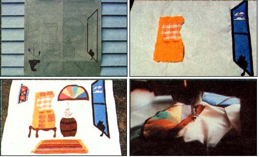 Figures are cut from paper pattern and used to outline shapes onto Pieces of fabric that will be appliqued ... the window is completed and stove is being positioned ... barrel, rug, and other elements are pinned to front 32-inch square so that the balance of the layout can be checked ... rainbow window is sewed together and then zigzagged into place. |
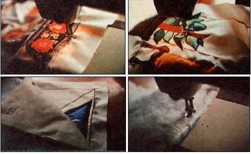 Straight pieces are very easy to pin and applique ... one side of this leaf has been stitched, stuffing has been tucked into the leaf to puff it up, and the last side is ready to be sewed down ... the two 32-inch squares of background fabric now face each other and a square of polyester batting is placed on top of the back panel ready to pin and stitch... a strip of paper or seam tape prevents tears if placed between the polyester fill and sewing machine's pressure foot. |
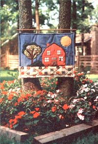 The ""wood stove, padded room"" wall covering the author made for a friend ... a bold, stuffed owl for a child's room ... another simple, striking design ... and a really nifty ""landscape"" wall hanging displayed-approriately-against a landscape. |
|
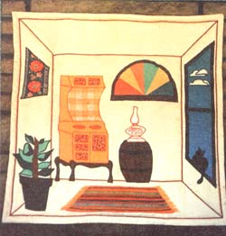 |
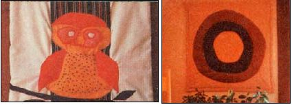 |
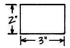 |
 |
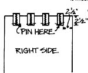 |
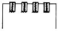 |
|
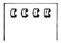 |
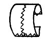 |
|
|
|
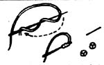 |
|